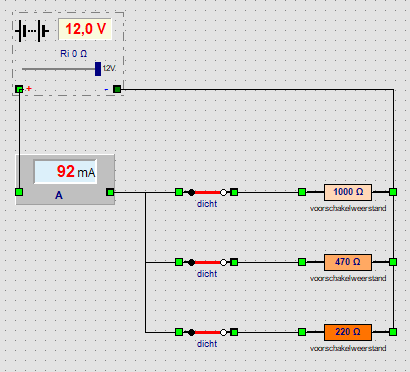

Lernpfad › Elektronik › Lektion 30 von 37

In Lektion 25 haben Sie drei gleiche Lampen parallel geschaltet. Jetzt sind die Widerstände verschieden. Jeder Zweig bekommt die vollen 12 V, und das ohmsche Gesetz gibt den Strom pro Zweig:
I = 12 V / 1000 Ω = 12 mA I = 12 V / 470 Ω ≈ 25,5 mA I = 12 V / 220 Ω ≈ 54,5 mA
Der kleinste Widerstand zieht den größten Strom. Ein Zweig mit kleinem Widerstand ist wie eine breite Straße: Dort fährt der meiste Verkehr.
Welcher einzelne Widerstand würde dieselben 92 mA ziehen? Mit dem ohmschen Gesetz: 12 V / 0,092 A ≈ 130 Ω. Man kann ihn auch direkt berechnen:
1 / Rers = 1 / R1 + 1 / R2 + 1 / R3 = 1/1000 + 1/470 + 1/220 ⇒ Rers ≈ 130 Ω
Achtung: Der Ersatzwiderstand ist immer kleiner als der kleinste Widerstand. Jeder Zweig, den Sie dazuschalten, öffnet einen weiteren Weg für den Strom.
Schalten Sie genau die Schalter ein, bei denen das Milliamperemeter 80 mA zeigt. Wie groß ist dann der Ersatzwiderstand?
Schalten Sie den zweiten und den dritten Schalter ein, den ersten aus: 25,5 + 54,5 = 80 mA. Der Ersatzwiderstand ist 12 V / 0,080 A = 150 Ω, kleiner als 220 Ω.